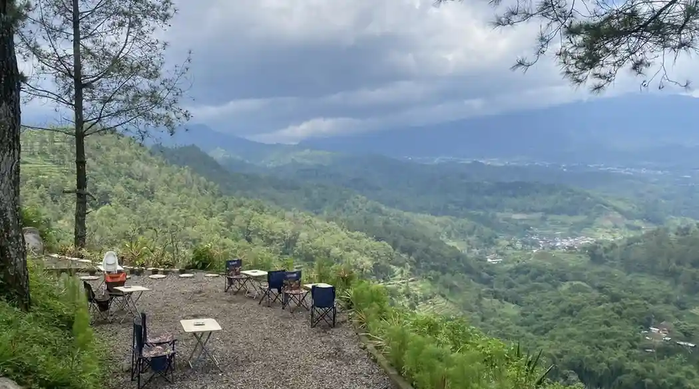

Banyak pelanggan selalu mempertanyakan satu hal krusial: "Bisakah membawa anak usia 5 tahun ikut camping?" Jawabannya sangat bisa! Kami memberikan layanan Fun Camping, letak kuncinya ada pada kata "Fun".
1. Rute Diskonfigurasi Bagi Pemula & Keluarga
Tidak seperti rute camping ekstrem (Hard Camping) yang menggunakan winch dan tali penarik melintasi alam terbuka sedalam dua meter, rute Paket Camping Batu Malang difokuskan pada pemandangan estetika dan rekreasi guncangan ringan. Jalanan bergelombang dibuat pas agar mengocok perut tanpa memicu trauma, melainkan memicu tawa bahagia anak.
2. Sistem Keamanan Pada Unit Tenda
Pemandu kami bisa menyesuaikan laju kecepatan dan sengaja menghindari bermanuver tajam di titik-titik alam terbuka ekstrim jika diinstruksikan sedang membawa penumpang batita/balita. Setiap armada diperlengkapi roll-bar berlapis pelindung busa untuk proteksi 360 derajat antisipatif.
Jangan biarkan rasa takut mengunci langkah eksplorasi buah hati Anda. Biarkan mereka menjadi ksatria kecil pembelah alam terbuka yang berani sebelum beranjak dewasa.
3. Tips Membawa Anak di Area Camping
Meski rute ramah anak, pastikan Anda juga kooperatif dalam mempersiapkan beberapa perlindungan esensial agar si kecil betah selama durasi 2 jam perjalanan.
- Minta Rute Hijau: Cukup komunikasikan dengan pemandu bahwa Anda membawa batita dan minta guncangan terminimalisir di titik-titik tertentu.
- Gunakan Pakaian Tebal: Kondisi alam seringkali tak tertebak, pastikan bawa penutup masuk angin dan topi kupluk ganda supaya anak tak kedinginan di atas gunung.
- Pangku dengan Erat: Saat duduk berjajar di kursi memanjang angkot/tenda, orang dewasa sangat dianjurkan memberikan penjagaan pinggul saat mobil menikung cepat.